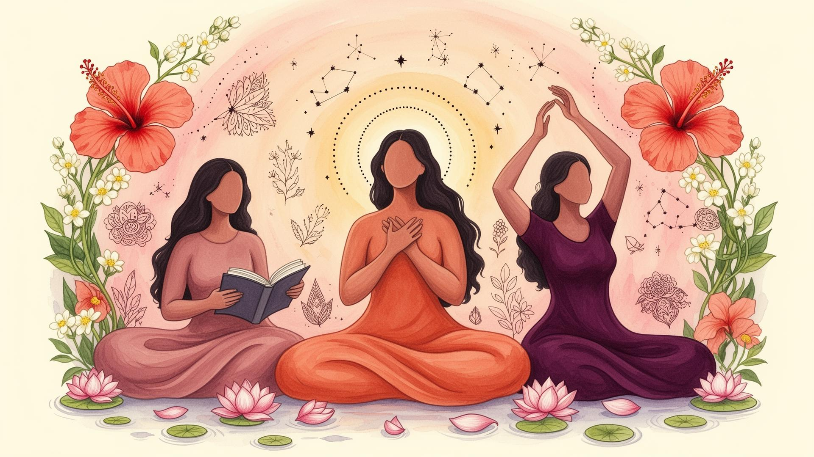

A research-backed guide to sexual awareness, self-discovery, body image, and the systemic failure of India's sex education framework — written for the generation it failed most.
Before We Begin
The fact that you're here means something.
Maybe a friend sent this. Maybe you found it at 2am, phone brightness all the way down. Maybe you've been carrying questions for years and this is the first time you went looking. Maybe you don't even know what you're looking for — just that nobody gave you what you needed, and you're tired of not having it.
Here's the thing. You were supposed to have this information years ago. Not in a whisper. Not with a side of shame. Just — as fact. As something you were entitled to know about your own body. Nothing remarkable about it, because there's nothing remarkable about having a body that works the way yours does.
You weren't given that. It's not your fault.
So. This is the attempt to give it now.
You'll find real research here — actual studies, actual data — because you deserve evidence, not folk wisdom passed down through people who were also never taught anything. You'll also find the honest stuff. The practical stuff. The things that only get said when no one else is listening.
Some of what's here you'll already know. Some will be new. Some will be things you half-knew but never heard said plainly — and hearing them said plainly will feel like something loosening. Good. That's the point.
Read at your own pace. Skip around. Come back to it. No right way to use something that was written for the sole purpose of being useful to you.
You're in the right place. Take a breath.
We're glad you're here. ❤️
Section 1
India is home to the world's largest adolescent population — approximately 253 million people between the ages of 10 and 19. Yet the country's formal sex education infrastructure is among the most fragmented and contested in the world. Children enter puberty with little to no reliable information, cobble together an understanding of their bodies from peers, pornography, and myth, and emerge into young adulthood carrying deep anxieties about sexuality, physical appearance, and relationships.
This paper synthesises peer-reviewed research, national health survey data (NFHS-5, UDAYA, RSOC), and journal studies to document what Indian adolescents actually experience — when sexual awareness begins, how they first encounter self-exploration, where they learn (or don't learn) about sex, the insecurities that form in the absence of education, and the lasting psychological costs. The evidence is presented disaggregated by gender, because the silences that harm boys and the silences that harm girls are different, and both must be addressed.
"Adolescents in India tend to be extremely poorly informed regarding their own sexuality and physical well-being, their health, and their bodies — and whatever knowledge they have is incomplete and confused."
— Beyond Controversies: Sexuality Education for Adolescents in India, PMC 2014Section 2
India has no single, mandated national sex education curriculum. The closest attempt — the Adolescent Education Programme (AEP), co-launched in 2005 by the Ministry of Human Resource Development (MHRD) and the National AIDS Control Organisation (NACO) — was intended to reach 13–18-year-olds with age-appropriate information on reproductive health, gender, HIV, and relationships.
It never fully took root. A coalition of political and religious objectors in multiple states declared the content "immoral" and culturally inappropriate. The result: a patchwork of near-silence in classrooms across the country.
The National Education Policy 2020 (NEP 2020) makes only oblique references to "health and wellness" and "life skills" without explicitly mandating comprehensive sexuality education. The UNFPA/UNESCO definition of Comprehensive Sexuality Education (CSE) — covering cognitive, emotional, physical, and social aspects of sexuality — remains largely unimplemented at scale.
What little exists is unevenly delivered. A 2025 qualitative study of school teachers in Eastern India (published in Reproductive Health) found that teachers themselves described sexuality education as a "double-edged sword" — believing it was necessary, but feeling undertrained, unsupported, and socially policed from delivering it meaningfully, particularly to girls.
Section 3
Sexual awareness in children is not the same as sexual activity — it begins with puberty, body curiosity, and exposure to sexual information. In India, puberty is arriving earlier than previous generations: studies indicate that many girls begin puberty by age 9, and most boys by 10–12. Meanwhile, structured sex education — if it arrives at all — typically begins only in Class 8 (ages 13–14), creating a multi-year information vacuum at the most critical developmental window.
Breast development and pubic hair typically first. Menarche (first period) usually 11–13. Most girls report receiving no advance preparation. Menstruation remains culturally taboo in many households — the onset is often experienced as alarming, even shameful.
Testicular growth first, followed by pubic hair, voice changes, and growth spurts. Spontaneous erections and nocturnal emissions (wet dreams) occur without any prior classroom or parental explanation for the vast majority of Indian boys.
Research confirms that curiosity about one's own body — and comparative curiosity about others' — is developmentally normal in this window. Without accurate framing, this curiosity is funnelled toward peers and internet sources, often pornography.
The majority of students across studies report that formal sex ed — where it exists — comes 2–4 years after puberty begins. A 2020 Haryana-based cross-sectional study found students themselves preferred introduction of sex ed from Class 8 (age 13).
Section 4
When schools and parents fail to provide accurate information, adolescents turn elsewhere. Research consistently identifies peers and the internet as the dominant sources of sexual knowledge for Indian youth — neither of which is curated, age-appropriate, or accurate.
A 2024 Tandfonline study found that parents' perception of sex education in India remains deeply ambivalent — most agreed it was needed, but viewed schools as the "right" place for it, while schools waited for families to begin the conversation. The result is mutual paralysis.
Section 5
Self-exploration — including masturbation — is a developmentally normal part of adolescent sexual development worldwide. In India, it occurs widely but in near-total silence: no education, no normalisation, and in many cases, active shame. The data shows a sharp gender disparity in both prevalence and emotional experience.
Prevalence rates for masturbation vary significantly between studies — a reflection of the measurement challenges in a stigma-laden topic — but the directional findings are consistent: males report higher prevalence and earlier onset, while females report lower prevalence, later onset, and dramatically higher rates of shame and guilt.
How do Indian adolescents first discover self-pleasure? The research — while limited in scope — points to accidental discovery: through bathing, through physical sensation during play or exercise, or through peer conversations about pornography. Almost no adolescent in the available literature reported learning about masturbation through any formal or parental channel.
Section 6
Data on first sexual intercourse in India is complex: it is shaped heavily by marriage patterns, urban/rural divides, and significant under-reporting — especially among women, for whom premarital sex carries greater social risk. The most reliable data comes from the National Family Health Survey (NFHS-5, 2019–21) and the UDAYA survey.
Research from NFHS-5 shows that 14% of young men had their sexual debut before age 18 — down from 25% in 2005–06, suggesting progress, but still representing millions of adolescents whose first experience occurred with no prior education on consent, contraception, or sexual health.
The UDAYA 2015–16 survey of unmarried adolescents (10–19) found that early sexual debut (before 16) was associated with peer pressure, low educational attainment, substance use, and — crucially — digital media exposure without any accompanying critical media literacy education.
Section 7
Without education about what bodies look like, what is normal, and the extraordinary variation in human anatomy, adolescents develop their reference points from peers, media, and pornography. The result is widespread insecurity about bodies — shaped differently by gender, but uniformly by silence.
Research on Indian men documents a cluster of anxieties centred on penis size, skin tone, body muscularity, and height. A 2021 study by Bhat & Shastry in Sexual Medicine specifically examined penis size concerns among Indian men and their female partners — finding that men's anxiety about size far exceeded women's stated concerns. Indian men disproportionately use Bollywood and media ideals of muscularity and virility as their reference points.
A 2023 ScienceDirect study on Indian women's body image found that skin tone, weight, breast size, body hair, and height are primary sources of dissatisfaction. The external pressure is intense: fairness products are a multi-billion rupee industry; thinness is increasingly aspirational; and Western media standards of genital appearance (amplified by pornography and social media) are creating a new wave of anxiety about the "right" way a vulva should look or smell.
A cross-sectional PMC study of college girls found that 77.6% reported body image dissatisfaction — rates comparable to Western studies — with skin colour being the single most reported concern, followed by weight. A separate Northeast India study linked body image dissatisfaction directly to depression and reduced self-esteem.
Section 8
The costs of inadequate sex education are not abstract — they are measurable. Research documents elevated rates of shame, anxiety, depression, and sexual dysfunction among Indian young people that can be directly linked to information poverty during adolescence.
The absence of sex education creates shame. Shame creates silence. Silence prevents help-seeking. Help-seeking prevention deepens both ignorance and shame. This cycle is well-documented in the Indian literature and is particularly acute for girls, who face stronger social policing around sexual curiosity and expression.
A 2024 study on male genital self-image (Aging Male, Tandfonline) found a strong inverse relationship between genital self-image and both depression and anxiety — meaning that men with poorer self-perceptions of their genitals had significantly higher rates of mental health disorders. The study explicitly links this to distorted reference points from pornography in the absence of accurate sex education.
Section 9
The evidence is unambiguous: Indian adolescents need, want, and will benefit from comprehensive, age-appropriate sex education. What does that actually look like? Drawing from international best practice and India-specific research, the following framework is proposed.
Body autonomy, correct anatomical names, and "safe vs. unsafe touch" from Class 1–2. Puberty education before puberty begins — by Class 5 at latest. Relationship and consent education from Class 7 onward.
Separate sessions for menstruation and reproductive biology perpetuate stigma. Boys need to understand menstruation; girls need to understand male development. Education that bridges the gap reduces shame and builds empathy.
Variation in genital size, shape, skin colour, and hair is normal and enormous. Without this, pornography becomes the reference standard. Accurate, non-pornographic depictions of human anatomical diversity must be part of the curriculum.
Masturbation is near-universal, developmentally normal, and medically harmless. Every myth currently believed by Indian adolescents — infertility, weakness, blindness — is directly measurable harm from the education vacuum. These myths need explicit debunking.
Consent is not a "Western" concept — it is a human rights standard. Communication, boundary-setting, recognising coercion, and enthusiastic consent must be taught explicitly, to both boys and girls, from early adolescence.
The Eastern India teacher study shows that teachers want to deliver sex ed but are undertrained and socially exposed. Teacher training programs, standardised materials, and institutional protection from community backlash are prerequisites for any curriculum reform.
Parental outreach explaining what CSE does and does not contain is essential. Evidence from the AEP rollout shows that resistance drops significantly when parents receive accurate information about curriculum content before implementation.
Recognising that most Indian adolescents are already accessing sexual content online, media literacy education — what pornography is, what it misrepresents, why real bodies and real sex differ — is not optional. It is an urgent public health response.
"Sex education is not about encouraging sex. It is about ensuring that when children encounter sex — in their bodies, in media, in relationships — they have the tools to understand it, protect themselves, and treat others with dignity."
— Synthesis from UNFPA CSE Framework & Indian Journal of Pediatrics (2020)Section 10
One of the most direct causes of genital insecurity in adolescence is having no frame of reference. Without education, the only comparisons available are pornography (which selects for extremes), peer boasting (which inflates), and cultural myth (which distorts). This section presents what the clinical and population data actually show — for Indian adolescents specifically — across the stages of puberty.
The Tanner Scale (Marshall & Tanner, 1969–70) is the clinical standard for assessing pubertal development. It runs from Stage 1 (prepubertal) to Stage 5 (adult). Understanding these stages is essential for adolescents to know where they are in a normal, predictable sequence — and that variation in timing is wide and expected.
| Stage | Typical Age (Boys) | Boys: Genital Development | Typical Age (Girls) | Girls: Breast & Pubic Development |
|---|---|---|---|---|
| Stage 1 Prepubertal |
Before ~10 yrs | Testes <4 mL; no pubic hair; penis childhood size (~4–6 cm flaccid) | Before ~9 yrs | No breast development; no pubic hair |
| Stage 2 Early puberty |
~10–13 yrs | Testes enlarge (4–8 mL); scrotum reddens/enlarges; first sparse pubic hair at base of penis | ~9–11 yrs | Breast bud appears (areola widens); sparse pubic hair along labia |
| Stage 3 Mid puberty |
~11–14 yrs | Penis lengthens significantly; testes grow further; pubic hair darkens and curls; peak height velocity; voice begins to change; flaccid length ~7–9 cm | ~10–12 yrs | Breasts grow beyond areola; darker, curlier pubic hair spreads; growth spurt |
| Stage 4 Late puberty |
~12–15 yrs | Penis widens; adult pigmentation; underarm hair; first ejaculation (spermarche) typically occurs; flaccid length ~8–10 cm | ~11–13 yrs | Areola forms secondary mound; menarche (first period) usually in stage 3–4; pubic hair adult-like in smaller area |
| Stage 5 Adult |
~14–17 yrs | Genitalia adult in size and shape; testes >20 mL; pubic hair extends to thighs; flaccid length ~8–11 cm typical | ~12–18 yrs | Mature breast form; areola flat against breast contour; pubic hair adult distribution |
Sources: Marshall & Tanner (1969–70); Tanner Stages — StatPearls/NIH; JAMA Pediatrics (Growth & Development of Male External Genitalia, 6200 males 0–19); Merck Manual Professional Edition
The single largest clinical study of penile dimensions in Indian men (Promodu et al., 2007, International Journal of Impotence Research) measured 301 physically normal men. This data is foundational — and routinely unknown to the very people it would most reassure.
Data from a PubMed cross-sectional study of males aged 13–15 (Sotos et al.) and the JAMA Pediatrics study of 6,200 males aged 0–19 provides the best available reference ranges for adolescent development. Note the wide overlap between stages — many boys who appear "behind" their peers are simply on a different but equally normal timeline.
Breast development is the most visible and socially charged aspect of female puberty. Yet it receives almost no normalising education. The range of normal is vast — in timing, in final size, in shape, in nipple and areola appearance, in degree of asymmetry. Asymmetry in particular causes significant anxiety: studies show the majority of women have breasts that differ measurably in size, with this being completely normal.
The vulva (external female genitalia) receives almost zero educational attention in India. The result: girls and women routinely believe their labia, clitoris, or pubic hair are abnormal. A 2005 study of labia minora found a natural range of 2–10 cm in length — with no "normal" cutoff. Surgeries to reduce labia (labiaplasty) are rising globally, driven almost entirely by women comparing themselves to digitally altered pornographic images — images that are not representative of any population.
Section 11
What follows is a visual celebration of real anatomical diversity — illustrated in the tradition of body-positive education used across Scandinavia, the Netherlands, and Germany, and inspired by projects like Jamie McCartney's Great Wall of Vagina. The purpose is simple: to show that bodies come in extraordinary variety, and every single one of them is normal.
Variation in inner labia size and shape, symmetry, skin tone, pubic hair, and clitoral hood — each one real, each one healthy, each one deserving of exactly zero shame.
If the only reference points you've ever had are silence, whispered shame, or what pornography looks like — this section is specifically for you. Look until something here looks like you. It will. And when it does, let that be enough.
Illustrations for educational use. Grounded in Lloyd et al. (2005) labia measurement study; Crouch et al. (2011) anatomical variation reference; and the spirit of Jamie McCartney's "Great Wall of Vagina" — which showed 400 real vulvas to prove one thing: there is no standard.
Showing variation in flaccid length, girth, skin tone, circumcision status, and pubic hair. All are clinically normal.
Schematic diagrams for educational use. Based on Promodu et al. (2007) Indian penile dimensions study; Tanner stage reference data; WHO normal variation guidance.
Showing variation in size, shape, position, areola diameter & colour, and nipple type. All are clinically normal.
Schematic diagrams for educational use. Based on Sanchez et al. breast morphology study; Westreich (2012) breast ptosis classification; clinical variation reference literature.
Section 12
Self-exploration — learning what your own body feels, how it responds, and what brings comfort or pleasure — is a healthy, normal, and important part of understanding yourself. It is not dirty, sinful, or harmful. It does not cause weakness, hair loss, blindness, infertility, or any of the myths commonly circulated in India. This section provides practical, evidence-based guidance — the kind that should be in every school curriculum but rarely is.
Most of what follows is what nobody ever told you — and should have. Read it as if a person who actually cares about you wrote it. Because the intent behind every line is exactly that.
You have the right to stop at any point if something is uncomfortable. You should never feel obligated to continue. Self-exploration is entirely on your terms, at your pace.
Wash your hands before and after. Keep fingernails trimmed and clean. If using any objects (note: fingers are perfectly adequate), ensure they are clean and have no sharp edges. The genitals are self-cleaning — do not douche or use soap internally.
It's normal to feel relaxed, happy, sleepy, or even a little reflective after self-exploration. If you feel guilt or shame, know that this is cultural conditioning — not a moral reality. These feelings usually diminish as you become more comfortable with your own body.
If you experience pain during self-exploration, notice unusual lumps, sores, or discharge, or have concerns about your genitals — see a doctor. Sexual health is health. There is no need for shame in a medical consultation.
Daily, weekly, rarely, or never — all are normal. Masturbation only becomes a concern if it interferes with daily life, relationships, or feels compulsive. The question is not how often, but whether it feels like a free choice.
Fantasies during self-exploration are private and do not define you or predict your behaviour. Having a thought is not the same as wanting to act on it. Sexual imagination is wide and varied in all humans — this is normal.
"Knowledge of one's own body — its anatomy, its responses, its rhythms — is not indulgence. It is health literacy. Young people who understand their bodies are better equipped to recognise what is normal, to identify problems early, and to communicate clearly with partners and doctors."
— Synthesis: WHO Sexual Health Definition (2006); SIECUS Principles of Sexuality Education; Indian Journal of Psychiatry (2020)Section 12b
Let me start with something important.
If you have never had an orgasm, you are not broken. You are not behind. You are not the only one quietly wondering if everyone else has figured something out that you haven't. You are simply someone who hasn't had it yet — and that is a far more ordinary place to be than anyone lets on.
What follows is what someone should have told you before it happened. Consider this that conversation. The one your mom didn't have with you, your school definitely didn't have with you, and that your friends probably got wrong anyway.
Here's the first thing nobody warns you about: there is no single description that fits everyone. If you go in expecting one specific sensation and something different happens, you might not even realise what just occurred. So let's be honest about the range.
For most people with vulvas, it begins as a building warmth — a pressure that feels like it wants to go somewhere. Like your body is asking a question it already knows the answer to, if you'd just stop interrupting long enough to let it finish.
As it peaks, some or all of the following may happen:
Some first orgasms are intense and completely unmistakable. Others are subtle — a quiet wave rather than a crash — and you may finish and genuinely think: was that it? It may have been. Smaller, gentler orgasms are entirely real orgasms. They tend to get more defined as you get more familiar with yourself. Think of it less like a destination and more like a language — you get more fluent with practice, and the early attempts still count.
Almost everyone stops themselves the first time.
Not on purpose. The body does it. As arousal builds toward its peak, the sensation becomes genuinely overwhelming — more than you expected, more than feels manageable — and every reflex you have says stop. Pull back. This is too much.
The instinct to retreat at this specific moment is the single most common reason first orgasms don't happen. The body gets close, the intensity spikes, the hand pulls back — and the wave recedes without breaking. You're left feeling vaguely frustrated and cheated without quite knowing why.
So here is what you do instead. When it becomes overwhelming, don't stop. Slow down if you need to. Lighten your touch if you need to. But keep your hand there. Maintain contact. Breathe slowly, all the way down, and let whatever is happening continue happening.
The intensity that is making you want to stop? That's it arriving. Stay.
When arousal peaks, almost everyone forgets to breathe. The body tenses, the breath holds, and the sensation loses its shape and disperses before it can arrive properly.
This is the single most underrated thing in all of sexuality and I will absolutely die on this hill.
When you feel the intensity rising — breathe out. Slowly. Deliberately. All the way down into your belly. And then again. Keep breathing through the most intense parts, especially when everything in you wants to hold your breath and tense everything at once.
A slow exhale at the moment of peak sensation doesn't diminish it. It opens the body enough to let what's happening move through you rather than cresting and breaking before it lands. Breathe. I'm genuinely serious about this one.
The physical aftermath is relatively straightforward. Warmth. Hypersensitivity. Muscle tension slowly unwinding. Possibly the sudden overwhelming urge to sleep for several hours. All normal, all expected.
What is less discussed is what can happen emotionally. And it needs to be discussed, because it can be genuinely bewildering if you're not expecting it.
Some people cry. Not from sadness — from release. Orgasm involves a significant neurological event: a flood of oxytocin, dopamine, and endorphins, followed by a fairly rapid return to baseline. For people who have been carrying tension — and if you grew up being told your body was something to manage rather than inhabit, you have been carrying tension — that release can come out as tears. This is not a sign something went wrong. It is often a sign something went very right, and your body is processing it the only way it knows how.
Some people feel a strange flatness or unexpected sadness immediately after. This is called post-coital dysphoria and it has a physiological basis — the rapid drop from peak neurochemical state can feel like a small, quiet grief. It passes within minutes. It does not mean the experience was wrong, or bad, or that you shouldn't have.
Some people feel floaty — slightly outside themselves, like the room has gone quiet in a specific way. Give it a minute. It settles.
Some people feel nothing particularly emotional at all. Just physical release and then calm. You are not deficient for not feeling transformed.
And some people feel genuinely, simply happy. Relaxed. Light. Quietly pleased with themselves in the best possible way.
Whatever comes — let it be what it is. You don't have to perform a reaction. Your body just did something significant. Give it a few minutes to land before you go back to being a person who has things to do.
There is a specific, particular frustration in trying, repeatedly, and not quite arriving. It is worth naming the most common reasons, because almost none of them are physical problems.
Your first orgasm is not a performance. It is not a milestone you're somehow late for. It is not something that happens to other girls and quietly passes you by.
It will happen. In your body's time, in your own privacy, when the conditions are right and you finally stop getting in the way of yourself.
When it does — and the intensity rises and everything in you says stop —
You already know what to do.
Stay. Breathe. Let it.
And afterwards, whatever you feel — let that be what it is too. You don't have to make sense of it immediately. You don't have to tell anyone. You don't have to be anything other than exactly where you are.
You're doing fine, babe. We're all rooting for you. ❤️
Section 12c
Let's get one thing out of the way first.
You live in India. "Privacy" means the bathroom, for seven minutes, while someone knocks on the door asking if you're okay in there. Your mother has opinions about your cupboard organisation. Your roommate borrows your charger without asking. Your father would like to know what that package from a sender called "Discreet Logistics" is about.
This is the reality. This guide is written for that reality — not some fantasy where you have a lock on your door and a bedside table that belongs only to you.
So. Let's talk about toys, safety, and the ancient Indian art of hiding things from everyone you love.
Not all toys are equal. The difference between a safe one and an unsafe one isn't about price or how fancy it looks. It's about what it's made of — and some materials that look perfectly fine can genuinely harm you.
The ones you want:
The ones to avoid:
You have. Most people have. No judgement here — curiosity plus zero access to actual options equals improvisation, and that is just human.
The shower head is your best friend. External stimulation, adjustable pressure, no evidence, no packaging, no explaining. The reason so many women figure themselves out in the shower is not a coincidence. Keep the pressure moderate — gentle setting, not full blast, and never directed internally. External only. This is the safest, most accessible option available to most of you and it works extremely well.
Your hands are underrated. Completely safe, completely available, zero logistics, and actually the best way to learn your own body before introducing anything else. Don't skip this step in the rush to find something more interesting.
What is genuinely risky and please just don't:
This is the part nobody writes. So let's write it.
Where to buy: Thatspersonal.com, IMbesharam, and a handful of other Indian retailers ship discreetly. Plain packaging. Neutral billing names. No "GIANT SEX TOY EMPORIUM" on the box, I promise.
The package problem: If you live at home or in a hostel where someone else might sign for deliveries — plan for this.
The hiding problem:
The hostel problem: Roommates. Thin walls. Shared bathrooms.
You don't need to spend a lot. You need to spend correctly.
For most people starting out, a small bullet vibrator in ABS plastic from a reputable brand covers external use safely and discreetly. Satisfyer makes genuinely good affordable options. Small enough to hide easily, quiet enough for reasonable situations, safe enough to use without worry.
If budget allows, the Satisfyer Pro 2 is worth every rupee. Air pulse technology rather than direct vibration — lower noise, very different and extremely effective stimulation. A personal favourite in many households. Allegedly.
Save the wand for when you have your own space. It is magnificent and it is emphatically not quiet. Your roommate will know. Your mother will know. The neighbours will form opinions.
Your pleasure is yours. It belongs to you completely — not to your mother's opinions, not to what your roommate might think, not to anyone.
Taking it seriously enough to do it safely is not indulgence. It is just sense.
You deserve the good version of this. Go find it. 💛
Section 16
Someone told you your hymen is proof of something. Probably several someones.
That it's a seal. That it breaks the first time. That there'll be blood, and that blood is evidence of something intact that no longer is.
Almost none of that is true. The fact that you were told it — by family, by culture, possibly by a doctor — is their failure, not yours.
Here's what's actually true.
A thin, flexible fold of tissue that partially covers the vaginal opening. Partially. Not a seal. Not a barrier. It has a natural opening from birth — because without one, menstrual blood would have nowhere to go.
It varies enormously between people. More tissue, less tissue, barely visible by puberty, looks nothing like the diagrams. All normal. The hymen has more anatomical variation than almost anything else in the body.
The rarest variant — an imperforate hymen with no opening — is a medical condition diagnosed in childhood when periods can't flow. If you've ever had a period, you don't have it. You'd already know.
The idea that first intercourse always causes bleeding — and that bleeding proves virginity — is false.
Multiple studies across different populations consistently find that more than half of women report no bleeding at all during first penetrative sex. Presence or absence of bleeding tells you nothing reliable about prior sexual activity. Nothing.
What causes bleeding when it does happen? Not a hymen "breaking." Usually insufficient lubrication, muscle tension from anxiety, or friction. The same things that can cause discomfort at any point in your sexual life.
The hymen doesn't break. It stretches. For most people it wears gradually over time — exercise, tampons, cycling — long before any sexual experience. By the time many women first have sex, there's barely any tissue left to detect.
⚠ This is pseudoscience — know your rights
The "two-finger test" — inserting fingers to assess whether the vaginal opening is "loose" — has no medical basis. There is no relationship between vaginal opening size and sexual history. None.
The WHO, UNICEF, and UN Women called for a global ban in 2018. No scientific validity. Human rights violation. Every major medical body that has reviewed it agrees.
If anyone pressures you to submit to this — family, prospective in-laws, anyone — you're being asked to undergo something medically meaningless and ethically indefensible. A doctor who performs it is doing bad medicine. You are allowed to refuse. You are allowed to know that.
Your hymen is not a record. Tampons don't "take" your virginity. Sports don't. Masturbation doesn't. Sex, when and if you choose to have it, won't leave detectable evidence for anyone to find.
Your body is not a document to be inspected. It doesn't owe anyone proof of anything.
The mythology was never about your body. It was about control. Your body, meanwhile, is just doing its thing. Quietly indifferent to what anyone thinks it needs to prove.
You're fine, babe. ❤️
Section 17
This one is harder than it sounds.
You know the version you were told. You can stop at any time. Your body, your choice. True. And almost none of it covers what actually happens when something doesn't feel right and you keep going anyway.
Let's talk about that.
Your nervous system has three automatic responses to discomfort: fight, flight, and freeze. The third one doesn't get explained.
Freeze is not a decision. It's physiological — your nervous system pausing, shutting down voluntary action, waiting for a signal. It happens before your conscious mind catches up. Goes still. Goes blank. Goes somewhere else in your head while your body stays put.
Research on sexual assault consistently finds that freeze is far more common than people expect. More than two thirds of women who experienced assault reported significant tonic immobility during it. They didn't fight back. They didn't run. They froze. Many spent years afterwards asking: why didn't I do something?
Because their nervous system did something. It froze. Not failure. Biology.
This matters even in solo exploration. When something doesn't feel right — a sensation you weren't ready for, a direction that suddenly feels wrong — your body may freeze before you've registered the discomfort. You might keep going. Not because you want to. Because the stop signal hasn't arrived yet.
Plainly: not stopping is not consent. Staying quiet is not consent. Going along is not consent.
Consent is active. Present. Your whole self participating — not your body tolerating something while your mind is elsewhere.
This applies between people. It also applies between you and yourself.
You've been trained to accommodate. To adjust. To not make a fuss. If you grew up in an Indian household — most Indian households — this wasn't an accident. Girls learn early that the smooth running of family life requires their cooperation. You smile when you don't want to. You eat what's served. You say it's fine when it isn't.
These add up. They become a default: discomfort enters, and instead of acting on it, you wait for it to pass.
Bringing that into your relationship with your own body means you can end up accommodating yourself. Finishing something because stopping feels like failure. Pushing through discomfort because you don't quite believe you're allowed to stop.
You are. Always. No explanation owed to anyone, including yourself.
Sometimes you finish something and something feels off. Not catastrophic — just a flatness. A wish you'd done something differently.
THAT is not a verdict on you. That's your body giving you information.
The useful response is curiosity, not punishment. Was there a moment you could have stopped and didn't? Was it habit, momentum, pressure you'd put on yourself? You don't need answers. Just pay attention. Learn what "yes" actually feels like in your body — not the absence of resistance, but genuine forward motion. So you can start to tell the difference.
Not a switch. A dial. The accommodation reflex is deep but it's learnable. And the safest place to learn it is alone, with no one else's needs in the room.
Your body's signals are information, not inconvenience. Probably more honest than anyone's been with you in a long time.
You get to honour that. Starting now. ❤️
Section 18
Look — the guilt is going to show up. Even when you know better. Even after reading this.
That's not you being broken. That's how deep the conditioning runs. You absorbed it before you were old enough to question it. That's on them, not you.
Here's what's actually happening when it does.
Your nervous system runs in two modes. One is for safety and rest. One is for threat and stress. Arousal needs the first one — a state where the body feels okay to let its guard down.
Guilt activates the second. Your nervous system doesn't distinguish between an external threat and an internal one. Shame, guilt, the sense that what you're doing is wrong — all register as threat signals. Arousal falls away. Sometimes shuts down completely.
This is why "just relax" is useless advice. You can't consciously override a threat response. The body doesn't take instructions from the part of your brain that knows better.
Nobody is born ashamed of their body. That's learned.
In the Indian context it comes from everywhere — religious teachings, family comments, the way certain topics get changed when you walk into a room, films where the good woman is desireless until marriage and the bad one isn't. The message, from a hundred directions: your value is tied to your sexual restraint. Your purity is something you can lose.
Wasn't designed for your wellbeing. Designed for control — specifically, to keep women's sexuality within structures that served everyone else. That's not cynicism. That's just history.
The guilt is a conditioned reflex. You absorbed it the way you absorbed everything else. It is not a reflection of some deeper truth about what you're doing. Reflexes can be unlearned.
Arousal. Guilt. Guilt suppresses arousal. Frustration. Guilt about the frustration. Sometimes guilt about having wanted it in the first place. Everything shuts down. You feel worse than when you started.
Familiar? You're not broken. This is exactly the spiral the conditioning was designed to create.
Not "just accept yourself." That sounds like something and means nothing.
What actually works: let the guilt arrive. Don't fight it and don't obey it. Notice it — there you are again — and then do what you actually want, not what the guilt is telling you.
Conditioned responses lose power through neutral repetition. Every time you notice the guilt and don't treat it as an instruction, you're doing the work. Not eliminating it immediately — that's not how it works. Just giving it a little less authority than last time.
Not a switch. A dial. The direction is always the same.
One more thing. The guilt might tell you your desire itself is the problem. It isn't. Your desire is involuntary — you didn't choose it, can't suppress it, and it says nothing about your character. The narrative that says otherwise was invented by people who needed you controllable. You don't owe them that.
The guilt is loud right now. It will get quieter. Not a character test — just your nervous system learning something it was never taught. Give it time.
You got this. ❤️
Section 19
Most of the fear is about not knowing what's going to happen. Once you know, it's a much smaller deal.
So let's go through it.
You don't need a problem to justify it. Turned 18? You can go. Sexually active? You should — not because something's wrong, but because meeting a doctor while everything is fine means you're not navigating a stranger for the first time when you're scared.
Go sooner if you have: discharge that's changed in colour, smell, or consistency. Period pain getting worse over time. Cycles consistently irregular for more than a few months. Any concern about STIs. Any interest in contraception.
You'll answer questions — medical history, medications, when your last period was. Someone will ask if you're sexually active. Answer honestly. Adult patients in India have the right to confidentiality — a doctor cannot share your information with your parents without your consent once you're 18. If you're worried, ask directly before you start: "Is this conversation confidential?" A good doctor confirms it is. Some in smaller or more conservative settings do violate this in practice — worth knowing so you can decide how much to share, and where.
The exam:
Everything. Literally everything.
Ask what they're doing before they do it. Ask them to stop at any point. Ask about contraception, discharge, whether something looks normal. Ask "is this okay?" about any part of your body. This is the job.
Ask for a female doctor if you want one. Normal request. You don't need to explain yourself.
Some gynaecologists will have opinions about unmarried sexually active women. Those opinions are not your problem. If a doctor makes you feel judged for anything, find a different one. Not being difficult. Basic self-advocacy.
Practically: ask trusted friends privately. r/AskIndianWomen has threads on this worth searching. Younger female gynaecologists in urban clinics tend to be better on this. Teaching hospitals attached to medical colleges are often more neutral — they've seen everything.
First appointment is the hardest. Second one is just Tuesday.
You've got this. ❤️
Section 20
Your body is not always going to give you a straight answer about what it wants. That surprises people. We grow up thinking physical response is a reliable readout of desire — wet means yes, dry means no. It doesn't work like that.
Here's how it actually works.
Increased blood flow to the vaginal walls causes fluid to seep through. Reduces friction, keeps tissue healthy, makes penetration comfortable. It's triggered by physical stimulation — touch, pressure, friction. Can also be triggered by visual or psychological arousal. But the trigger mechanism is largely automatic. Doesn't require conscious desire. Doesn't require consent. Responds to input the same way your mouth waters when you smell food you don't actually want.
Sexual non-concordance is when physical arousal and subjective desire don't match. Meredith Chivers at Queen's University has done some of the most important research on this. The finding: women show significantly higher rates of non-concordance than men. Physical response and reported desire line up only around 10% of the time in women, versus roughly 50% in men.
What this means:
Both are normal. Neither is your body lying to you. Physical response and desire run on partially separate systems that don't always sync.
If you've ever felt confused or ashamed because your body responded physically to something you didn't want — this is why. Your body was not giving consent on your behalf. It was responding to physical input the way it's built to. That response says nothing about what you wanted.
If you've ever been mentally ready but physically nothing was happening — also this. Physical arousal needs conditions. Relaxation, time, the right stimulation. Desire alone doesn't produce it on command.
Natural lubrication varies between people and across your cycle. Lower around your period when oestrogen is lower. Higher around ovulation. Normal variation, not a sign anything's wrong.
Using additional lubricant is not a failure or an admission of anything. It's practical. Water-based or silicone-based. Not oil-based if you're using condoms — oil degrades latex.
Consistently dry regardless of where you are in your cycle? Mention it to a doctor. Often hormonal, often easily addressed.
Your body is doing its job. It just doesn't always read the same memo as your brain at the same time. That's not dysfunction — that's just the system being more complicated than anyone told you. Now you know.
❤️
Section 21
You probably got one talk. Maybe from your mother, maybe from a school teacher who clearly wanted to be elsewhere. You were shown a pad and that was largely it.
Not enough. Here's what you actually need to know.
The 28-day cycle is an average, not a rule. Normal is anywhere between 21 and 35 days — measured from the first day of one period to the first day of the next. Shorter than 21 or longer than 35, consistently, is worth mentioning to a doctor.
Periods last between 2 and 7 days. Flow varies enormously between people and across your life — lighter when stressed, heavier at certain points, different after illness, different in your 20s than your 30s.
Your cycle has four phases:
Tracking your cycle for a few months tells you what your normal looks like. That's the goal — not matching a textbook, knowing your own pattern.
This is the part that matters most. Indian women are raised to normalise period pain. The cultural message: this is just how it is, adjust, don't complain. That message has caused real harm. So let's be specific.
Get checked if you have:
Polycystic ovary syndrome involves elevated androgens, irregular ovulation, and often small follicles on the ovaries. Affects roughly 1 in 5 Indian women. Massively underdiagnosed.
Symptoms: irregular periods, excess hair growth on face or body, acne that doesn't respond normally to treatment, difficulty losing weight, fatigue. Not every person has all of these. Some have one or two, mildly.
Why it goes undiagnosed: symptoms get normalised. Irregular periods get blamed on stress for years. Excess hair gets threaded instead of investigated. Nobody connects the dots until something forces a check — often a fertility concern.
Why it matters to catch early: untreated PCOS increases long-term risk of type 2 diabetes and cardiovascular disease. Early diagnosis means early management before downstream effects compound.
Diagnosis: blood panel plus ultrasound. If those symptoms sound like you, ask for both.
Endometriosis is when tissue similar to the uterine lining grows outside the uterus — on ovaries, fallopian tubes, bowel, bladder. It responds to hormonal cycles the same way: thickens, has nowhere to shed. The result: inflammation, adhesions, significant pain.
Average time to diagnosis globally: 7 to 10 years. In India, likely longer.
Why: period pain gets normalised. Girls are told severe cramping is just how periods are. Doctors sometimes reinforce this. A condition causing serious progressive harm goes uninvestigated for years.
Symptoms to take seriously: period pain that is severe and getting worse over time. Pain during sex. Pain during bowel movements during your period. Heavy bleeding. Persistent fatigue. You don't need all of these. One of them, consistently, is enough to ask about.
No blood test for endometriosis. Definitive diagnosis requires laparoscopy — a minor surgical procedure. Start by telling a doctor what you're experiencing and having them take it seriously. If they don't, find one who will.
A significant number of girls in India manage periods without adequate products. In many parts of the country periods are still considered polluting, limiting where girls can go and what they can do. Girls miss school. Women miss work.
If you have options, know what they are beyond disposable pads:
None of these are lesser options. They're often better ones.
App or a note on your phone. Track: start date, end date, flow (light/medium/heavy), pain intensity, mood, anything you notice.
Three months in, you'll have your baseline. You'll know your actual cycle length, your normal flow, which phase makes you feel best, when to expect the rough days. Useful for you, invaluable for a doctor if anything changes.
Apps: Clue is the most privacy-forward — they've committed to not sharing data with third parties. Flo is more feature-rich but has had privacy concerns. Either way — period data is sensitive health information. Treat it accordingly.
Your period is not a punishment. Not proof of anything. It's your body running a system it runs reliably for decades. It deserves to be understood. You understand it better now than most people do.
❤️
Section 22
An STI is an infection. Like a respiratory infection, a gut infection, a skin infection. It's a thing your body can get through contact with another body. It says nothing about you as a person, your worth, or whether your choices are right or wrong. Health matter. Treating it like one.
The reason this needs saying plainly: shame is the single biggest barrier to testing, and untreated STIs cause real harm. Not because you deserve harm — because infections left unaddressed progress.
Most STIs spread through skin-to-skin genital contact, mucous membrane contact, or bodily fluids. Not through casual contact, shared toilets, hugging, shared food. You cannot get an STI from a toilet seat. You cannot get HIV from sharing food.
Condoms significantly reduce transmission risk for most STIs but don't eliminate it for those spread through skin contact (herpes, HPV). Reason to know your status and your partner's — not a reason for despair.
Urine sample or vaginal swab covers chlamydia and gonorrhea. Blood tests cover HIV, syphilis, and herpes. HPV detected through a Pap smear or HPV co-test.
In India: government hospitals, private clinics, and FPAI (Family Planning Association of India) clinics in multiple cities offer confidential sexual health services. At a general physician, you can request specific tests by name — "I'd like to be tested for chlamydia and gonorrhea" is a complete sentence a doctor should respond to without drama.
You can ask for confidential testing. You are entitled to it.
How often: if you're sexually active with new or multiple partners, once a year is reasonable. After any unprotected sex with a new partner, sooner.
Bacterial STIs — treatable with antibiotics. Caught early, they resolve. Viral STIs — manageable with medication. None of this is a life sentence. None of it is a moral verdict.
What makes outcomes worse: not testing, not treating, and carrying shame that gets in the way of both.
Nothing shameful about a body that can get infections. Nothing shameful about getting tested. The only thing shame does here is delay care. You know better now.
❤️
Section 23
This section assumes you're an adult who can decide what goes into your own body. Because you are.
More options than condoms and hoping for the best. Here's what exists, what each one does, how to access it in India, and — because it comes up — how to handle a partner who has opinions about your choices.
Worn on a penis during sex. Used correctly and consistently: around 98% effective. Typical use — the occasional error — closer to 87%. The gap between perfect and typical is where most unintended pregnancies happen.
Also the only method that provides meaningful protection against STIs. Which is why they matter even when you're using something else.
Available everywhere in India. No prescription needed. Internal condoms — worn inside the vagina, more effective when used correctly than external condoms, give you more control — exist and are worth knowing about, though less widely available in India.
Daily pill, synthetic oestrogen and progestogen. Works primarily by preventing ovulation. Perfect use: over 99% effective. Typical use: around 93%.
Beyond contraception: often significantly reduces period pain, regulates irregular cycles, reduces PMS, can improve acne. Many people take it for these reasons alone.
Side effects vary by person and formulation. Nausea, mood changes, reduced libido, breast tenderness in the first few months — common. Many people experience nothing significant. If one formulation doesn't suit you, others might. Dozens of options.
Available at Indian pharmacies without a prescription. Brands include Yasmin, Femilon, Novelon. Not expensive. A doctor can advise on formulation, but you can start with what the pharmacist has.
Important: certain antibiotics and anticonvulsants reduce effectiveness. Use backup if you're on antibiotics.
Progestogen only. For people who can't take oestrogen — migraines with aura, high blood pressure, certain clotting histories, breastfeeding. Slightly narrower timing window (traditional mini-pill: 3 hours; newer formulations: 12 hours). Available in India — ask specifically, it's less commonly stocked.
Small T-shaped device inserted into the uterus. No hormones. Works by creating an environment hostile to sperm. Over 99% effective. Lasts 5–10 years, removable any time.
Periods may be heavier and more crampy for the first few months. Usually settles. Best option for people who can't or don't want hormonal methods.
In India: available at government hospitals and family planning clinics, often free or subsidised. Also available at private clinics. Insertion takes a few minutes in a gynaecologist's office.
Same device, releases low-dose progestogen locally. Over 99% effective. Often reduces periods significantly — many people stop having them entirely, which is normal and not harmful. Lasts 5 years.
Less widely available in India than the copper IUD, more expensive. Available at private clinics in urban areas. Worth asking about if you want long-acting contraception with hormonal benefits.
Backup for when something goes wrong — not a regular method. i-Pill, Unwanted-72, and others contain levonorgestrel, work primarily by delaying or preventing ovulation. Most effective taken as soon as possible after unprotected sex — within 72 hours, some effect up to 120 hours.
Available OTC at every pharmacy in India. No prescription needed. Will not terminate an established pregnancy.
Using it once: fine. Using it repeatedly as your primary method: not ideal. Less effective than regular methods, causes significant hormonal disruption. If you're reaching for it regularly, set up something more consistent.
Your contraception is your medical decision. Full stop.
A partner who refuses condoms because they "don't like them" is telling you something important about how they weigh their comfort against your health. Useful information.
A partner with opinions about which contraception you should use — opinions that happen to result in less protection for you — also telling you something.
You are allowed to hold a line. "I use condoms with new partners" is a complete policy. "I'm not comfortable with that" is a complete sentence. Resistance or pressure from a partner is a flag, not a negotiation to be won.
⚠ Stealthing
If a partner removes a condom without your knowledge during sex, this is called stealthing. It is non-consensual. It is classified as sexual assault in several countries. If this happens to you: emergency contraception, STI testing, and you are allowed to be angry.
You have more options than anyone told you. You have the right to use them without explaining yourself to anyone. Best method is the one you'll actually use consistently.
❤️
Section 24
A few things happen to your body in the hours after sex — solo or partnered — that nobody covers anywhere. Not complicated. Just nobody talks about them.
Most useful piece of information in this section.
The urethra sits very close to the vaginal opening. During penetrative sex or intense genital contact, bacteria can travel toward it. Urinating within 30 minutes flushes that pathway before anything establishes itself.
UTIs are extremely common in sexually active women — around 50–60% of women will have at least one in their lifetime, and sex is one of the biggest triggers. Burning during urination, frequent urgent need to pee, sometimes cloudy or pink-tinged urine. Left untreated, can travel to the kidneys and get more serious.
The pee rule doesn't guarantee you'll never get one. It significantly reduces the risk. Do it every time.
If you get a UTI: water, doctor, antibiotics. Don't wait it out. They don't resolve reliably on their own.
Discharge often increases in the hours after sexual activity — thicker, slightly different colour, more noticeable. Normal. Your body doing maintenance.
Normal discharge: clear to white or off-white. Stretchy like egg white around ovulation, thicker and creamier in the luteal phase. Dries slightly yellowish on underwear — also normal. Should not have a strong or unpleasant smell.
Not normal: grey, green, or cottage-cheese texture. Strong fishy or foul smell. Accompanied by itching, burning, or swelling. These indicate bacterial vaginosis (BV) or a yeast infection — both treatable, neither a crisis, both worth seeing a doctor about rather than self-treating blindly.
The vagina maintains an acidic environment (pH roughly 3.8–4.5) that keeps harmful bacteria in check. Things that disrupt it:
Mild soreness after penetrative sex or intense stimulation is normal, especially with insufficient lubrication. Should resolve within a day.
Soreness lasting more than a couple of days, swelling, unexpected bleeding, or pain that gets worse — worth seeing a doctor. Could be a minor tear, could be something else. Doesn't need to be suffered through.
Clean them after every use. Non-porous materials (silicone, glass, stainless steel) — soap and water or boiling. Porous materials (certain rubber or latex) harbour bacteria and can't be fully sterilised — another reason material matters.
Your body manages itself well. Give it the basics — hydration, the pee rule, no soap inside — and it handles the rest. No products, rituals, or special regimes needed. Just a bathroom and some common sense.
❤️
Section 25
At some point — probably years before this document — the internet became your sex educator. Nobody hired it. It just showed up, had a lot to show you, and had very specific ideas about what you should be seeing.
This is about knowing how that system works, so you can use it instead of being shaped by it without noticing.
One goal: keep you on the platform longer. Not educate you. Not give you a balanced view. Maximise engagement.
Engagement, on platforms where sexual content exists, tends to escalate. Content slightly more extreme than what you just watched gets more of a reaction than content you've already normalised. The algorithm learns this. Serves you the next thing. Then the thing after that.
Not a conspiracy. Arithmetic. Nobody decided to push you toward increasingly extreme content. The system optimises for what keeps you watching, and escalation keeps people watching. Works on everyone, by design.
Knowing this doesn't make you immune. But the content at the end of a long session is not a neutral sample of what sex is. It's the output of an engagement machine that's been learning your responses for however long you've been using it.
Produced content. Made by people with economic incentives. For a market.
That market was historically assumed to be straight men — which is why mainstream pornography looks the way it does. What photographs well under studio lights. What sells to the broadest demographic. What performers are willing to do for what pay.
Not a documentary. The performers are performing. Sounds, timing, reactions — productions, edited, lit and angled for a camera. The bodies are selected for a specific aesthetic representing a tiny fraction of what human bodies actually look like.
None of this makes it bad. It makes it a thing with a specific context. The problem is when that context becomes invisible. When the production becomes the template.
If you've spent years watching sex before experiencing it, you have a template. You may not have chosen it consciously, but you have one.
That template probably includes: how long things should take, what sounds are right, what both bodies should look like, what a successful encounter looks like. Most of these are production choices. Not facts.
Research consistently finds that people who consume more pornography report higher rates of body image dissatisfaction, more unrealistic performance expectations, and lower satisfaction in real-life encounters — not because real sex is worse, but because the gap between production and reality is jarring when you're not expecting it.
Not a lecture. Data. Question is whether you want to be aware of the template you're carrying, or whether you'd rather not know it's there.
If you've done the self-exploration work — if you have any sense of what your body actually responds to — that information is more reliable than anything you've seen on a screen.
What feels good in your body is your data. Doesn't have to look like anything. Doesn't have to match a camera angle or happen in a particular amount of time. Yours.
The internet can show you that things exist. Introduce vocabulary. Be useful, occasionally educational, occasionally very funny. But it cannot tell you what you like. Only you can find that out.
There is genuinely good sex education content on the internet. It's just not what the algorithm serves you.
You are smarter than the algorithm. It just runs faster. Keep your own counsel.
❤️
Section 26
Discomfort during self-exploration is common. Pain is information. Knowing the difference matters.
If you're new to touching your body this way, some sensations will be unfamiliar. Unfamiliarity can feel like discomfort even when nothing is wrong — your nervous system flagging the unusual, not the harmful.
Pressure is expected. A feeling of fullness, intensity, mild ache — part of the landscape.
Pain — sharp, stabbing, burning, or pain that makes you want to immediately stop — is different. Your body sending a clear signal. Listen to it.
Involuntary contraction of the vaginal muscles in response to attempted penetration — or even in anticipation of it. Makes any penetration painful or impossible. Not a physical structural problem. A conditioned muscular response.
Very common. Significantly more common in women from conservative or high-anxiety backgrounds around sex. Not a defect. A reflex. Reflexes can be unlearned.
Highly treatable. Pelvic floor physiotherapy has strong outcomes — gradual desensitisation, breathing work, progressive muscle relaxation. If penetration has been painful or impossible for you, raise it with a gynaecologist who won't dismiss it. Not something to just live with.
Discomfort is a prompt to adjust. Pain is a reason to stop. No medal for pushing through either one.
❤️
Section 27
Entirely optional. Starting there.
No correct amount of body hair. No version of your body that requires modification before it's acceptable. Grooming is personal preference — comfort, sensation, aesthetics, whatever matters to you. Only opinion that counts is yours.
That said: a lot of people want to know what their options are and nobody told them.
Main complication of most methods. Hair grows back into skin rather than outward — small bumps, sometimes with a dark spot or pus. Don't dig at them. Gentle exfoliation a few times a week when not freshly waxed or shaved. Warm compress helps. Most resolve on their own. Significantly inflamed, red, or painful — minor skin infection, worth a doctor's attention.
Thinner and more sensitive than most of the body. Whatever method you use — no fragrant products, no harsh soaps, nothing with alcohol directly after hair removal. Plain unscented lotion or aloe vera if you moisturise. No special products needed.
Consistent irritation, ingrowns, or folliculitis from shaving or waxing? Switch methods. Trimming or laser are both lower-irritation long-term.
Women's razors cost more than men's razors. Consistently, across brands, across price points. The NYC Department of Consumer Affairs documented a 7% average markup on women's personal care products compared to equivalent men's — and in razors and shaving items specifically, the gap is higher.
What you get for that markup: a pink handle, a moisturising strip of questionable value, and marketing implying your legs have different requirements than a face. They don't. Blades are blades.
Men's razors at mid-range price points — Gillette Mach3, Gillette SkinGuard, similar options from Bombay Shaving Company's unisex lines — give you better blade quality for less money. The handles are slightly different ergonomically. You adjust in one use. Shave is the same or better.
Same logic applies to shaving gel. Men's shaving gel is cheaper and works identically on any skin. The pink tax is real and documented. The solution is extremely simple: shop the men's aisle.
Your body is not a maintenance project. Handle it accordingly.
❤️
Section 28
Knowing what you want and being able to say it to another person are completely different skills. First one you build alone. Second one takes practice — and it will feel awkward before it feels natural. That's not a sign you're doing it wrong.
You've spent your whole life being rewarded for not taking up space. Not making requests. Not being inconvenient.
The accommodation reflex — it shows up here too. Specifically as: the inability to say I want this or not that to someone you're intimate with, because wanting things and saying so feels demanding, presumptuous, or like too much.
It isn't. It's just communication. Feels like a big deal because you were never told it was allowed.
Easiest conversations about sex happen outside of it. Not mid-way through. Not immediately after when emotions are high. Neutral moment — over food, on a walk, whenever you're both relaxed.
"Can I tell you something I've been thinking about?" works as an opener for almost any of this.
You don't need everything figured out. You can be exploratory: I've been thinking about what I actually like and I want to start being more honest about it with you. That sentence alone does more work than you'd expect.
Short is better. Full sentences are optional.
A little slower. Right there. Can we try something different? That doesn't feel great — can we adjust? Keep doing that.
Positive direction is easier to start with than the correction. Tell someone when something is working before you tell them when it isn't. Builds a shared vocabulary — they learn what your yes sounds like, which makes your not quite easier to interpret.
If words feel impossible in the moment, sound and movement are information too. Moving someone's hand is communication. Pulling closer is communication. Stilling and tensing is communication, if they're paying attention. If they're not paying attention to your signals — worth noting.
Harder part. Telling someone to keep doing a thing is easy. Telling someone to stop or change is where most people swallow it and say nothing.
A partner who responds to your expressed preferences with defensiveness, sulking, or making you feel bad for having them is telling you something. Not about you. About them.
You are not demanding by having preferences. Anyone who makes you feel that way when you communicate honestly is someone you'll spend the rest of the relationship staying silent around. Worth knowing early.
A good partner responds to I like this and not that with curiosity, not ego. They adjust. They ask follow-up questions. They do not make it about their performance or their feelings. The goal is both of you having a good time — that requires information, and information requires that you're both allowed to give it.
First time you say what you actually want out loud to someone, it will feel enormous. Second time, slightly less. Tenth time, nothing at all. That's the whole arc. Start somewhere.
❤️
Section 29
You shouldn't have to navigate all of this alone. Information helps, but it's not the same as a person. Someone you can talk to, ask follow-up questions, call when something confusing happens at 11pm. That person matters.
Not everyone is a candidate. You need someone who:
These people are rarer than they should be. You might find one or two. That's enough.
Older women who've already navigated the things you're navigating — a cousin in her 30s, a friend's older sibling, a work mentor. People who've been through it are usually better than people who are in the middle of it alongside you.
Friends who've demonstrated discretion. Not friends who tell you everything about everyone — friends who, when something important came up, you noticed they didn't spread it.
Therapists and counsellors. iCall (icallhelpline.org) offers low-cost counselling in India with trained counsellors who have heard everything. This is literally their job. Confidentiality is professional. Judgment is absent by design.
Online communities with good moderation. r/AskIndianWomen is better than most — real people, same specific cultural context, and your question is probably not as unusual as it feels.
You don't have to lead with everything. Test first.
Share something smaller than the thing you actually want to talk about. See how they handle it. Handle it well — stay in the conversation, respond without drama, hold it quietly — that's information. Share more next time.
"I have a question and I'm not sure who to ask" is a legitimate opener. Signals that this matters and that you chose them deliberately. Most good people respond to that with care.
Not everyone who presents as safe is safe.
Honest reality for a lot of young women from conservative families. The people around you may not be safe. Your family may be actively part of the environment you need distance from. Not a personal failure. A structural one.
Options when offline isn't available:
Finding your person takes time. Some find them early, some late, some build the relationship slowly over years without one big conversation. All fine. Goal is just not being completely alone with it. You don't have to be.
❤️
Section 30
You are entitled to a private inner life. That includes your search history, your reading, your purchases, your conversations about your own body. None of it is anyone else's business. Here's how to actually protect it.
Every major browser has a private or incognito mode. Chrome: three dots → New Incognito Window. Safari: Private. Firefox: Private Window.
Does: Doesn't save browsing history, search terms, cookies, or form entries on the device. When you close the window, it's gone.
Doesn't: Hide your activity from your internet service provider, from the WiFi router your household uses, from your school or workplace network, or from the websites themselves. If someone has access to your router's admin panel — whoever set up the WiFi — they can see which domains you visited, not the specific pages.
For most situations — parent picking up your phone, roommate borrowing your laptop — incognito is sufficient. For a technically capable person with router access who is actively looking, it isn't.
One more thing: if you're logged into a Google account while browsing, Google saves your search history to that account even in incognito mode. Go to myactivity.google.com to see it and delete it. Better: use incognito while logged out of Google entirely, or use a different browser for sensitive searches.
If someone has access to your unlocked phone, they can read your WhatsApp. Full stop.
Useful features:
Your cycle data is sensitive health information. Clue is the most privacy-forward — they've committed to not sharing data with third parties. Flo has had privacy concerns. Whatever app you use: your cycle data, symptom logs, notes are stored somewhere and tell a detailed story about your body. Treat them accordingly.
A device that backs up to a shared cloud account — family iCloud, shared Google Photos — means those photos are visible to everyone on that account.
Almost all reputable online sellers in India — Amazon, Nykaa, most adult product retailers — ship in plain packaging by default. Check before ordering.
Ordering to a shared address and want privacy: Amazon locker pickup is available in many Indian cities. Workplace address works. Prepaid wallet or UPI account in your own name means purchase history doesn't appear on a family credit card statement.
Your inner life belongs to you. Technology just needs a little help remembering that.
❤️
Section 31
Your menstrual cycle doesn't just affect your mood and your uterus. It affects your libido, your sensitivity, how easily arousal comes, and what kinds of touch feel good. Working with it instead of being confused by it makes a difference.
During orgasm, the uterus contracts rhythmically and the body releases oxytocin and endorphins — same neurochemicals involved in pain relief. Pelvic blood flow that accompanies arousal also helps relax cramping muscles.
The research isn't large-scale, but the mechanism is sound and the anecdotal evidence is overwhelming. If you're in the first day or two of your period and cramps are bad, this is a legitimate option. No downside.
Masturbating during your period is safe. Doesn't cause infection, doesn't affect your flow harmfully. May temporarily increase flow — uterine contractions expel more blood — which some people actually find useful.
Your cervix changes position across your cycle — higher and softer around ovulation, lower and firmer before your period. Affects how internal pressure feels. Something comfortable at mid-cycle might feel different or uncomfortable in the days before your period. Normal variation, not a sign something's wrong.
Around ovulation, the clitoris and vulva are often more sensitive — arousal is faster, sensation more intense. Right before your period, some people find response is slower, more stimulation needed. Both hormonal, both shift again once your period starts.
Safe. Fine. Only practical consideration is mess — dark towel underneath, the shower, or a menstrual disc (not a cup — discs are designed to be worn during sex).
Some partners have no issue. Some do. If a partner expresses disgust at your body's normal function — not a preference, disgust — worth filing away.
Your body has a rhythm. You don't have to optimise around it. But knowing it means fewer confusing days and more moments where you're not working against yourself.
❤️
Section 13
These schematic illustrations show typical physical development for Indian adolescents across six age points, grounded in Tanner staging and NFHS-5 / ICMR growth data. Every body develops on its own schedule — these represent average trajectories, not standards to measure against.
Average ages in Indian girls — NFHS-5 (2019-21) & Marshall-Tanner staging
Average ages in Indian boys — NFHS-5 (2019-21) & Marshall-Tanner staging
“Pubertal timing in India runs 6–18 months earlier than Western reference populations. A 2022 ICMR multi-centre study found menarche at a mean age of 12.3 years in urban girls and 12.8 years in rural girls. Boys show comparable shifts. Understanding this timeline helps young people recognise that their body is on schedule.”
— ICMR Study on Pubertal Development (2022); NFHS-5 Adolescent Health Data (2019-21); Marshall & Tanner (1969, 1970)Section 14
Understanding same-sex attraction and experience is essential to complete sex education. This section presents the best available research — India-specific data where it exists, global data with explicit caveats where it does not. The decriminalisation of consensual same-sex conduct in India (Navtej Singh Johar v. Union of India, 2018) removed a major barrier to self-reporting; pre-2018 data almost certainly reflects significant underreporting.
Sources: NATSAL-3 UK (2013); CDC NHANES USA (2011–13); ACSF Australia; India estimates from NACO HIV Estimations 2021 & Humsafar Trust studies. India figures are likely significant underestimates due to stigma and pre-2018 legal barriers.
Research consistently finds that first same-sex experiences are reported as more emotionally intimate than first opposite-sex experiences by the same individuals, across multiple studies (Savin-Williams, 2005; Diamond, 2008; Rosario et al., 2006). Qualitative Indian research (Narrain & Bhan, 2005) mirrors this finding.
Sexual identity is not fixed, especially in adolescence. Key longitudinal findings:
Critical distinction: sexual behaviour ≠ sexual identity ≠ sexual orientation. These are three distinct dimensions that often, but do not always, align — especially in high-stigma social environments like pre-2018 India.
Synthesis: Diamond (2008), Savin-Williams (2005), Rosario et al. (2006). Global data — India-specific longitudinal studies not yet available.
“Same-sex attraction and experience are a normal part of the spectrum of human sexuality. The distress experienced by many LGBTQ+ Indians is not caused by their orientation — it is caused by the social response to it. Inclusive sex education that names, normalises, and provides accurate information about same-sex experience is one of the most effective interventions we have.”
— Synthesis: Meyer (2003) Minority Stress Model; Narrain & Bhan, Because I Have a Voice (2005); Project Khoj Survey (2019); WHO Sexual Health Definition (2006)Section 15
Most sex education — when it exists at all — teaches attraction as binary: you are heterosexual or homosexual, sexual or not. Research tells a far more interesting and accurate story. Attraction is dimensional, often fluid, and frequently doesn't map cleanly onto any category. This section is for anyone who has ever felt: "I don't quite fit any of the words I've been given."
Attraction is not one thing. Most researchers now distinguish between at least four separate dimensions that can point in entirely different directions in the same person:
Who (if anyone) you feel physical arousal toward. Can be directed at a gender, a type, a dynamic, or — for some people — not strongly directed at any real person at all.
Who you want to be close to, fall for, build something with. Completely separate from sexual attraction — you can feel romantic pull toward someone you have no sexual attraction to, and vice versa.
A pull toward someone — their presence, their mind, their beauty — that is real and intense but doesn't neatly map onto sexual or romantic desire. This is perhaps the most common and least named form of attraction.
The desire for physical closeness, touch, warmth — distinct from sexual arousal. Many people crave physical intimacy with someone they don't experience sexual attraction toward, and this is entirely normal.
Most people assume these four things always point the same direction. For many people they don't — and that discordance is the source of enormous confusion that goes completely unnamed in Indian sex education.
Aegosexuality (also written aego- or autochorissexuality) is a sexual orientation on the asexual spectrum, first described by Anthony Bogaert (2012) and later formalised within asexuality research. It is characterised by:
This is not dysfunction. This is not "low libido." This is not something to fix. It describes a real, documented pattern of experiencing sexuality — and it is far more common than anyone is taught.
None of these mean you can't masturbate, enjoy sex, fall deeply in love, or have a full and intimate life. They describe the pattern of attraction, not its absence.
Aegosexuality is one place on a wide spectrum. Another — and often confused with it — is demisexuality: experiencing sexual attraction only after forming a deep emotional connection. Not attraction that builds gradually. A complete absence of it — and then, sometimes, its sudden arrival from inside a bond that already existed.
Here is what makes demisexuality distinct from "just being choosy":
The Split Attraction Model (SAM) gives language to something many demisexual and asexual-spectrum people experience but can't name: that romantic attraction and sexual attraction are not the same thing, do not always move together, and can point in entirely different directions.
Lisa Diamond's landmark 10-year longitudinal study (2008) followed 100 women who had reported same-sex attraction and found something that surprised almost everyone:
Diamond's conclusion — that sexual fluidity is particularly common in women, and that emotional intimacy and sexual attraction are often linked in women in ways that can shift attraction — is one of the most important and least discussed findings in sexuality research.
Perhaps the most common unaddressed experience among young Indian women: developing deep emotional attachment — sometimes shading into romantic or physical feeling — toward another woman, and having no framework for understanding what that means.
This experience is almost never represented in Indian media or education. The result: young women who feel something real and significant are left to interpret it alone — often concluding they are "confused," "too close," or "going through a phase." The research says otherwise.
If any of these feel familiar, you are not confused. You are paying attention:
None of this needs a name right now. These are not symptoms. They are your interior life, finally being honest with you. The only job is to let yourself feel them — fully, without immediately asking what they mean or what they make you.
Labels exist to serve people. People do not exist to serve labels. Some people find enormous relief and community in a word that names their experience — lesbian, bisexual, pansexual, demisexual, queer. Others find that every available word fits badly and none of them quite captures what is actually true.
Both are fine. Both are valid. The goal of understanding your own sexuality is not to arrive at a permanent, accurate category. It is to know yourself well enough to make choices that are good for you — with honesty, with care, and without shame.
"The most important thing is not what you are. It is that you are allowed to be it — whatever it turns out to be — without apology, without performance, and without having to explain yourself to anyone who hasn't earned that conversation."
— Synthesis: Diamond (2008), Sexual Fluidity; Bogaert (2012), Asexuality and Autochorissexuality; Meyer (2003), Minority Stress; Savin-Williams (2005), The New Gay Teenager